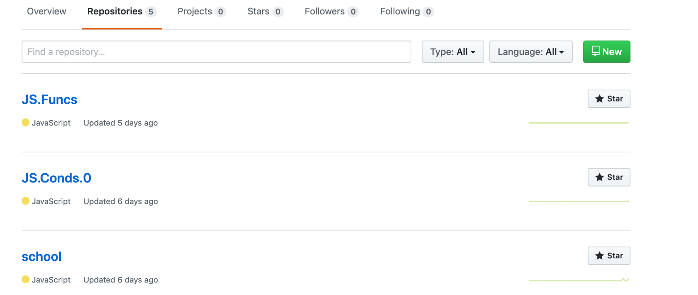

Git step-by-step
1. Make a repo
Gå ind på github og lav en ny repo. Du skal her tilføje din samarbejdspartner, så du automatisk kan push og pull til din repo.
2. Clone a repo
Der er oprettet en repo, for at du kan ændre den, skal du nu klone den. Det skal du gøre ved at gå ind på terminalen og være der, hvor du vil have mappen.
Skriv dette i terminalen:
cd projekter git clone https://github.com/SimonKalmar/siteDE2.git
Du har nu klonet repo'en til din computer
3. Change it
Du har nu hentet en repo. I repo'en laver du en ny side med tilhørende style. Denne side har dine samarbejdsparnter ikke, derfor skal du pushe siden.
4. Push the changes
Når du har ændret siden skal det pushes, så dine andre gruppemedlemmer kan få adgang til dine ændringer. Du skal nu tilføje dine ændringer til git, hvilket du gør ved at skrive:
cd projektmappe git add . git status
Ved at skrive dette, tilføjer du dine stage(iscenesætter) til git, hvorefter du kan se om git har registeret dette vha. git status.
git commit -m 'Besked til din gruppe' git status
Ved at skrive dette, tilføjer du dine ændringer til git. Her kan du også undersøge om git har registeret dette vha. git status. Du er nu klar til at pushe den til github. Du skal nu pushe dine ændringer, så din gruppemedlememr kan se dine ændringer.
git push -u origin version2
Ved at skrive git push uploader git dine ændringer, hvorefter dine gruppemedlemmer kan hente dem ned ved at pull
5. Pull the changes
Dine gruppemedlemmer har ikke fået dine ændringer, derfor skal de nu hente det gennem git. De skal derfor gå ind i terminalen og anvende pull metoden for, at I kan få det samme. Du skal huske at være i den samme mappe, så du ikke hante den forkerte.
cd projektmappe git pull
6. Make a branch
Nu skal der laves en version 2 af projektet. Da der skal foretages store ændringer, hvor man beholder originalen(masteren) indtil man har testet om den nye version virker.
cd projektmappe git branch version2
Du har nu lavet en branch. Man kan ikke selv se den, men det kan git. For at arbejde i branchen skal du skrive dette:
git checkout version2
Du ændre nu koderne, så du kan teste om det virker.
7. Merge the branch
Nu hvor ændringerne er lavet, og de er testet om, de virker skal de nu sættes sammen med masteren, som er de orginale koder.
Du skal nu ud i masteren, hvorefter du sammensætter din branch og din master. På den måde bliver masterne koderne opdateret, og dine ændringer i din branch bliver sammensæt sammen med masteren.
cd projekt git checkout master git merge version2 git push
Nu hvor du har sammensat dine ændringer kan du vælge at slette din branch, ved at skrive (sletter du din branch, kan du ikke få den igen):
git branch -d version2
Fortryder du at du vil slette den kan du skrive dette:
git branch -D version2
8. Was that everything?
Du har nu lært grundstenene i git.